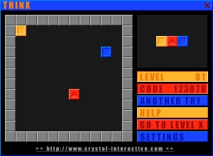
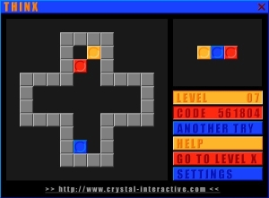
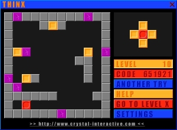
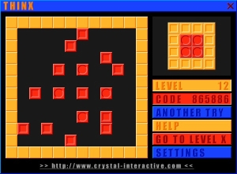

Thinx
Despues de un flashaso nostálgico, recordé que quería encontrar si o si el "Thinx" y que funcione para Windows XP. Después de un intento fallido en una página el año pasado, me decidí a buscarlo nuevamente... Y LO ENCONTRE!!! y funciona bajo XP sin problema y sin la opción de compatibilidad.
El Thinx es un juego de lógica creado por "crystal-interactive" (creo que hizo capuz). Es simple y tiene como objetivo acomodar los bloques de distintos grabados y colores según indica la imágen a un costado. Más adelante se complica más la cosa, ya que las paredes/bordes son sectores que cambian de color al bloque, o flechas que cambian la dirección. Tiene 33 nivles en total más un final.
   
Me tomé la libertad de subirlo para compartirlo; descargar Thinx.